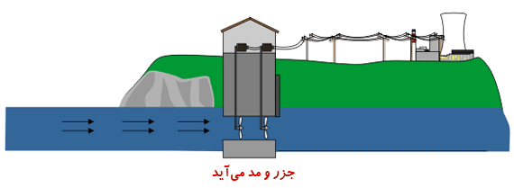

Tide
The phenomenon of tides is caused by the gravitational force of the moon. Since the moon is a relatively large object in space that is very close to the earth, its gravity actually pulls the earth's water towards it. Wherever there is a moon, and as the moon revolves around the earth, a bulge is created, and as long as the moon is above the area, this bulge will exist. Tidal energy or tidal energy is a form of hydropower that is the conversion of tidal power of a renewable resource. Although the use of tidal energy is not widespread yet, it can be one of the sources of electricity production in the future. The occurrence of tides can be predicted better than wind energy and solar energy. Among renewable energies, tidal energy has always faced the problem of high cost and limitation in places with high drag or high water velocity. Tidal dams use the potential energy in the height difference between the upper and lower reaches. When a tidal barrage is used to generate electricity, the potential energy of a tidal barrage is stored by strategically placing special barrages. When sea level rises and subsidence begins, the temporary surge of tidal energy is channeled into a large pool behind the dam, storing a large amount of potential energy. The energy of this water is released by the retreat of the water, and with the movement of large turbines, its energy is converted into mechanical energy and electricity is produced by generators. These dams extend along the coast along the entire length of the mouth of the river or bay The energy of this water is released by the retreat of the water, and with the movement of large turbines, its energy is converted into mechanical energy and electricity is produced by generators. These dams extend along the coast along the entire length of the mouth of the river or bay The energy of this water is released by the retreat of the water, and with the movement of large turbines, its energy is converted into mechanical energy and electricity is produced by generators. These dams extend along the coast along the entire length of the mouth of the river or bay
